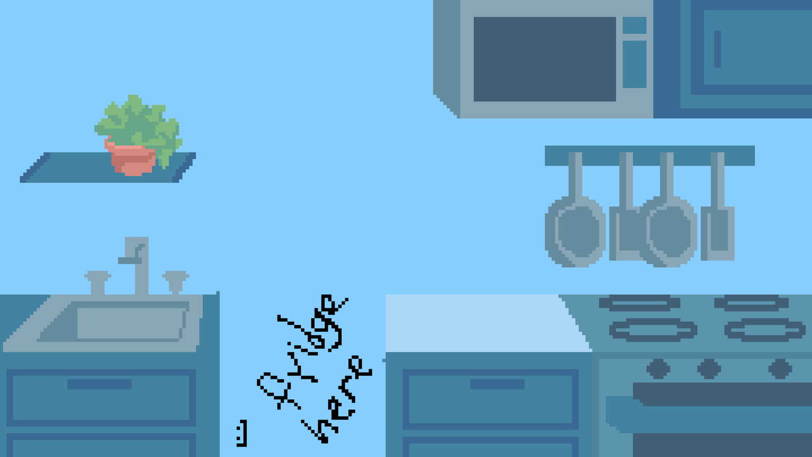

Your kitchen

 Fridge
Open the fridge to take a photo and find out what's inside
Fridge
Open the fridge to take a photo and find out what's inside
 Recipe book
Open the recipe book to choose, save and shop for recipes
Recipe book
Open the recipe book to choose, save and shop for recipes
Tap the Fridge to take a photo of your fridge and see what recipes you can make. Tap the Recipe book to pick recipes, see your saved ones and your shopping list.